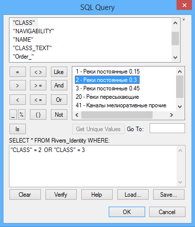
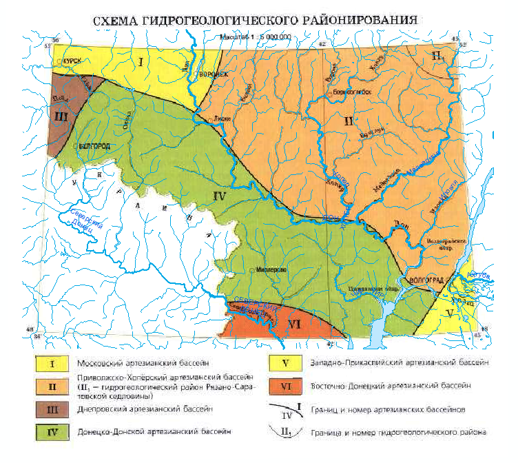
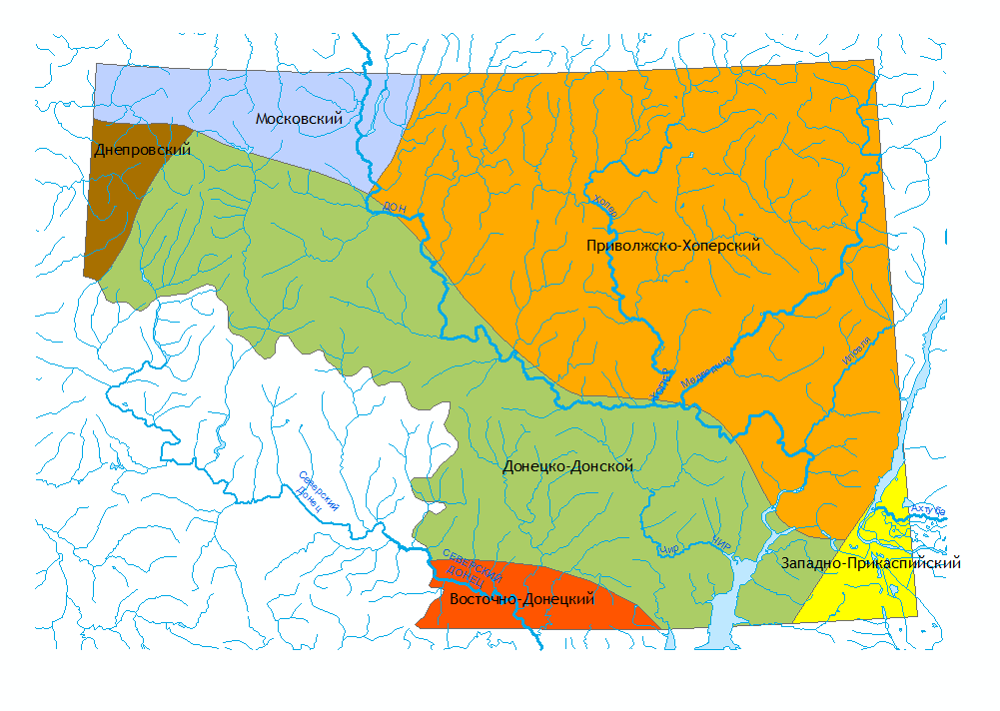
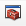
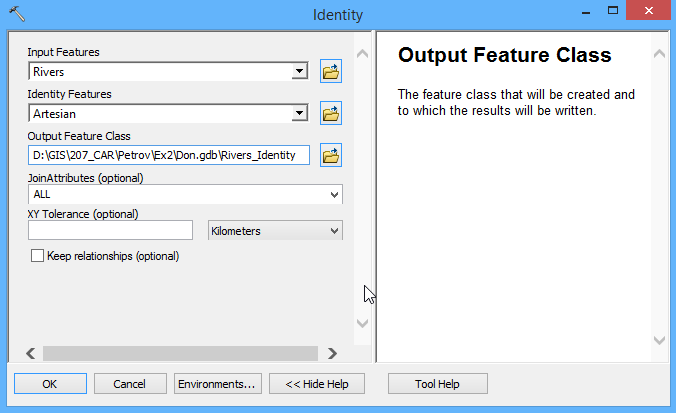
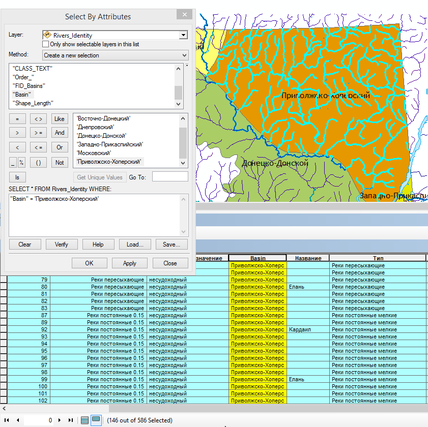
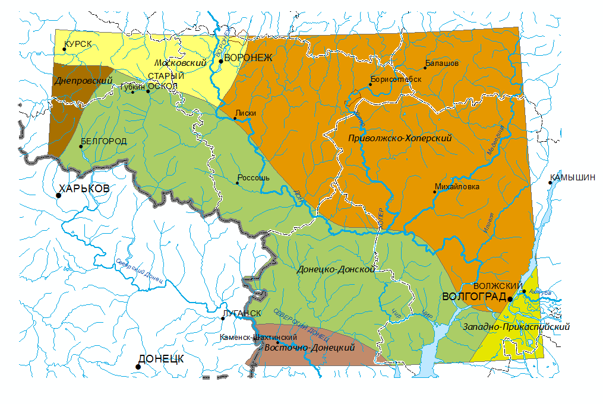
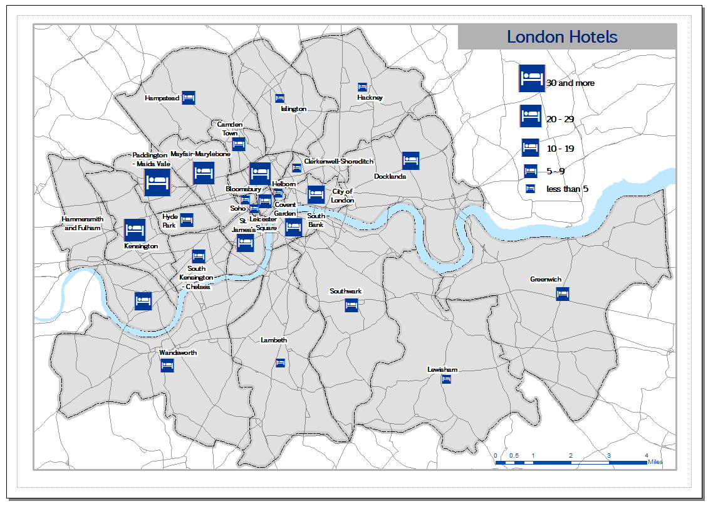

Упражнение 6 Создание тематической базы геоданных административного деления города
6.1 Введение
Цель задания — знакомство с привязкой, трансформированием и цифрованием геоизображений, элементами базовых технологий ГИС (оверлей, пространственные запросы).
| Параметр | Значение |
|---|---|
| Теоретическая подготовка | Системы координат и проекции на картах, привязка геоизображений, трансформирование геоизображений, цифрование геоизображений. Методы трансформации: аффинное, проективное, полиномиальное, метод резинового листа (сплайны). Пространственные запросы, атрибутивные запросы, оверлей. |
| Практическая подготовка | Знание основных компонент интерфейса ArcGIS Desktop (каталог, таблица содержания, карта). Работа с базой геоданных. Настройка символики и подписей объектов. |
| Исходные данные | Cлои картографической основы OpenStreetMap, растровая карта районов Лондона. |
| Результат | База данных со слоем границ районов Лондона. Результаты выборки и статистика по количеству отелей в пределах каждого района. Картодиаграммы по числу отелей в каждом районе. Проект карты с оформленной компоновкой |
| Ключевые слова | Системы координат, проекции, трансформирование координат, пространственная привязка, цифрование, оверлей, пространственные запросы, атрибутивные запросы, библиотеки символов, картодиаграммы |
6.1.1 Контрольный лист
- Привязать растровую карту к опорным данным
- Дополнить класс районов путем цифрования растровой карты
- Заполнить названия новых районов
- Определить путем пространственного запроса количество отелей в каждом районе.
- Построить картодиаграммы по полученным значениям с использованием нестандартных библиотек символов
- Подготовить проект карты с компоновкой
6.1.2 Аннотация
Задание посвящено знакомству с привязкой растровых карт, созданием и наполнением баз пространственных данных путем цифрования, оформлением карт на основе баз данных. В этом задании вы также познакомитесь с запросами, с помощью которых можно ограничивать число отображаемых объектов.
В задании предлагается выполнить координатную привязку карты районов Лондона и оцифровать недостающие районы для создания персональной БГД «Административные районы Лондона». Далее, используя запросы к БГД, по каждому району определить количество входящих в него отелей, и построить социально-экономическую карту, которая показывает способом картодиаграмм количество отелей в каждом районе. Работа завершается оформлением компоновки карты.
6.2 Добавление референцных данных
Скопируйте каталог Ex06 в свою папку и разархивируйте внутри него файл London.zip — он содержит базу геоданных для выполнения упражнения.
Подключитесь в окне Каталога к вашей папке Ex06. Убедитесь, что в ней находится база геоданных London.gdb и растровый файл InnerLondon.png:

Раскройте базу геоданных и перенесите на карту класс пространственных объектов Roads, присвойте ему символ в виде черной линии толщиной 0,5 пункта.
Добавьте на карту также слой Water и присвойте ему символ Lake (голубой полигон с синей обводкой). Картографическое изображение примет следующий вид:

Снимок экрана №1. Картографическая основа
Сохраните документ карты в свою папку Ex06 под именем London.mxd.
6.3 Привязка карты
Внимательно прочтите раздел Привязка растровых данных (Georeferencing) в файле Описание функций.
Добавьте на карту из окна каталога слой InnerLondon.png и поместите его под слои Water и Roads. При добавлении слоя появится диалоговое окно, предупреждающее о том, что файл не имеет привязки. Закройте его.
Расположите карту в центре окна ArcMap.
Откройте панель инструментов Georeferencing. Выберите в ее меню команду Fit to Display, чтобы переместить непривязанный растр на середину области отображения.
Используя инструмент расстановки контрольных точек на панели Georeferencing, укажите по крайней мере 3 контрольные точки в разных частях города:

Щелкайте сначала на растре, затем на векторном слое. В качестве точек используйте перекрестки дорог, которые вы можете найти как на растре, так и на картографической основе. Например, и на растре и на основе хорошо распознается перекресток на западной окраине Хемпстеда:

Желательно, чтобы точки были равномерно распределены по полю карты (по краям и в центре) и не располагались на одной линии — это обеспечит хорошие коэффициенты трансформации.
Ознакомьтесь с доступными методами трансформирования по контрольным точкам. Для этого в меню на панели Georeferencing выберите команду Transformation. По умолчанию выбрано аффинное преобразование. При пяти контрольных точках будет доступно также проективное преобразование. Оставьте выбранным аффинное преобразование:

Осуществите трансформирование растра. Для этого на панели инструментов Georeferencing выберите команду меню Georeferencing > Update Georeferencing. После выполнения трансформирования контрольные точки удалятся.
Картографическое изображение примет следующий вид:

Снимок экрана №2 Привязанный растровый слой
Сохраните документ карты в папке отчета.
6.4 Создание слоя городских районов
Отключите слой дорог и слой гидрографии, оставив видимой только подложку.
Добавьте на карту класс пространственных объектов Districts. Он содержит районы северного берега Темзы. Вам необходимо его дополнить, оцифровав районы южного берега реки:

Прочтите раздел Редактирование в файле Описание функций, особенно уделив внимание разделам Создание объектов и Цифрование в режиме автозавершения (auto-complete).
Включите режим редактирования слоя Districts. Для этого в его контекстном меню выберите команду Edit Features > Start Editing.
Откройте список шаблонов слоя, нажав кнопку Create Features на панели Editor и посмотрите доступные опции.
Оцифруйте недостающие городские районы. Выполняйте работу в следующей последовательности:
Сначала оцифруйте район Wandsworth с помощью обычного инструмента Polygon.
Далее последовательно пристыкуйте к нему оставшиеся районы южного берега с помощью инструмента Auto-Complete Polygon.
Участки, примыкающих к реке, аккуратно проведите по береговой линии аналогично районам северного берега.
После того как редактирование районов завершено, сохраните изменения, выбрав команду Editor > Save Edits.
Откройте таблицу атрибутов слоя районов (Ctrl + двойной щелчок мышью по названии слоя). Поочередно выделяя каждый из новых районов, введите в поле Name его название, ориентируясь по карте.
После ввода названий снова сохраните изменения.
Завершите редактирование, выбрав команду Editor > Stop Editing.
Измените оформление слоя следующим образом: сделайте пустую заливку, а обводку сделайте оранжевого цвета толщиной 1,5 пункта.
Включите подписи районов по полю Name.
Отключите слой растровой карты.
Включите слой дорог и установите ему прозрачность, равную 60%.
Картографическое изображение примет следующий вид:

Снимок экрана №3. Оцифрованные городские районы с подписями
Сохраните документ карты.
6.5 Расчет статистики по районам
В данной части работы предлагается определить количество отелей, которые попадают в пределы каждого района, затем построить картодиаграммы по полученным значениям. Для этого будет использован следующий алгоритм:
Выбрать текущий район.
Выбрать здания, попадающие в его пределы (пространственный запрос).
Из полученной выборки оставить только здания, являющиеся отелями (атрибутивный запрос).
Записать число отобранных зданий в атрибут Hotels текущего района.
Эти операции необходимо повторить для каждого района.
Перед выполнением анализа следует создать атрибутивное поле, в котором будет храниться число отелей. Для этого:
Остановите сеанс редактирования, если это не было сделано ранее (Editor > Stop Editing).
Откройте таблицу атрибутов слоя.
Выберите команду меню Add Field… (если она не активна, это значит, что вы не остановили сеанс редактирования на панели Editor).

Введите название поля Hotels и тип поля Short Integer. Диалог примет следующий вид:

Нажмите ОК. Поле будет добавлено в слой.
Добавьте на карту класс building_points из базы геоданных London.gdb. Разместите его под слоем districts. В данном слое каждая точка соответствует зданию.
Для удобства работы организуйте пространство следующим образом:
Откройте атрибутивные таблицы слоев districts и buildings и расположите их друг над другом в левой части окна:

Включите редактирование слоя districts и выберите в его таблице первую строчку (нужно щелкнуть на заголовке слева от строки).
Откройте диалог пространственной выборки (Selection > Select by Location) и диалог атрибутивной выборки (Selection > Select by > Attributes). Расположите их рядом.
Выберите в диалоге пространственной выборки слой building_points в качестве выбираемого (target) и слой districts в качестве выбирающего (source). Отметьте галочкой пункт Use Selected Features — это позволит выбирать с использованием уже выбранного района. Диалог примет следующий вид:

Нажмите кнопку Apply — на карте должны выбраться здания, попавшие в пределы выбранного района. Не закрывайте диалог.
Перейдите в диалог атрибутивной выборки. В качестве выбираемого слоя укажите building_points и смените режим выборки на Select from current selection. В этом режиме будет осуществляться подвыборка среди уже выбранных объектов.
Введите следующий атрибутивный запрос, чтобы отобрать отели:
"type" = 'hotel'Диалог примет следующий вид:
Нажмите Apply. Не закрывайте диалог атрибутивной выборки. На карте останутся выбранными только те здания текущего района, которые являются отелями. Чтобы ознакомиться с их списком, перейдите в атрибутивную таблицу слоя building_points и включите режим показа только выбранных объектов (Show selected records):

Внизу таблицы вы можете увидеть число выбранных объектов (на рисунке их 8, у вас может получиться другое число, если выделен другой район).
Внесите указанное число в атрибутивную таблицу слоя districts для текущего выбранного района:

Выберите следующий район в таблице слоя districts (на рисунке выше это будет район Islington).
Повторите шаги 5–10 для всех оставшихся районов. На всем протяжении выполнения этих операций у вас должны быть открыты таблицы обоих слоев, а также диалоговые окна атрибутивной и пространственной выборки.
Сохраните документ карты
Законченная таблица должна содержать в поле Hotels число отелей для каждого района:

Снимок экрана №4. Атрибутивная таблица с числом отелей по каждому району
6.6 Построение картодиаграмм
Отключите слой building_points.
Создайте точки для размещения картодиаграмм числа отелей. Для этого
Щелкните правой кнопкой мыши по базе данных London.gdb и выберите пункт Make Default Geodatabase, чтобы результаты обработки складывались в эту базу.
Откройте ArcToolbox и запустите инструмент геообработки Data Management Tools > Features > Feature to Point.
Укажите в качестве Input Features слой Districts. Исправьте название выходного класса на Hotels. Диалог примет следующий вид:

Нажмите ОК. Созданный слой точек будет добавлен на карту.
Создайте картодиаграммы на основе полученных точек. Для этого:
Включите режим Graduated Symbols на вкладке Symbology.
Выберите поле Hotels в качестве поля по которому будет производиться классификация.
Аналогично первому упражнению, отредактируйте границы классов. Предлагается выделить следующие классы: менее 5, 5-9, 10-19, 20-29, 30 и более. Для этого необходимо нажать кнопку Classify и заменить границы первых четырех классов на 4, 9, 19, 29. Максимальное значение не трогайте. Нажмите ОК.
Измените шаблон картодиаграммы на значок отеля. Для этого сначала прочтите разделы Подключение библиотек символов и поиск символов по названию в файле Описание функций. Нажмите кнопку Template на вкладке Symbology. Далее подключите библиотеку Civic и найдите в ней символ Hotel Information 1. Выберите его и нажмите ОК.
Отредактируйте подписи классов, изменив первый на «less than 5», а последний — на «30 and more».
Измените максимальный и минимальный размер значка на 48 и 16 соответственно. Диалог настройки символов примет следующий вид:

Нажмите ОК.
Сохраните документ карты
6.7 Настройка оформления других слоев
Требуется отредактировать оформление слоев, чтобы получить картографическое изображение хорошего стиля и качества.
Расположите слои в следующем порядке сверху вниз: Hotels — Roads — Water — Districts — InnerLondon.
В настройках слоя Districts:
Измените цвет заливки на серый 10%.
Измените символ обводки на Boundary, County. Увеличьте его толщину до 6 пунктов, а цвет установите серый 20%.
Замените стандартный шрифт подписей на более современный Euphemia, установите размер 8 и жирное начертание. Включите гало подписей, чтобы они хорошо читались на фоне.
Для слоя Water отключите обводку, оставив только голубую заливку.
Необходимо запретить подписям районов перекрывать значки картодиаграмм. Для этого откройте панель Labeling, откройте на ней меню Labeling и убедитесь, что включен механизм размещения подписей Maplex. Далее нажмите кнопку Label Weight Ranking:

В открывшемся диалоге исправьте значение Feature Weight для слоя Hotels на 1000.

Любому слою может быть присвоен вес от 0 до 1000. Чем выше вес, тем меньше вероятность, что слой будет перекрываться подписями.
Нажмите ОК. Картографическое изображение примет следующий вид:

Снимок экрана №5. Картодиаграммы числа отелей по городским районам
Сохраните документ карты
6.8 Компоновка
Оформите компоновку карты с легендой в соответствии со следующим образцом.

Для этого:
Установите масшта равным 1:100 000.
Для заголовка карты используйте также шрифт Euphemia синего цвета.
Под заголовок подложите прямоугольник серого цвета 30%.
Добавьте масштабную линейку в милях синего цвета.
Добавьте легенду к слою Hotels, отключите в ней названия самого слоя и единиц измерения, чтобы остались только плашки и их подписи.
Добавьте к фрейму данных рамку серого цвета 30%. Для этого в свойствах фрейма данных на вкладке Frame выберите границу Border и измените ее параметры. Выровняйте прямоугольник названия по верхнему правому углу карты.
По завершению оформления Экспортируйте карту в файл формата PNG в вашей директории Ex06 с разрешением 150 точек на дюйм, чтобы вставить ее в отчет.
6.9 Ответы на вопросы
Заполните отчетный файл и положите его в сетевую папку для проверки преподавателем.